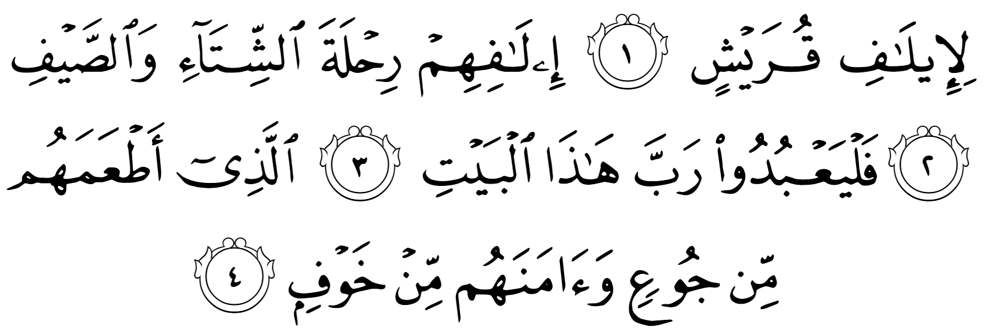
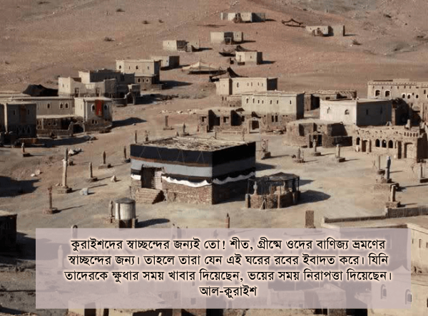

কুরাইশদের স্বাচ্ছন্দের জন্যই তো! শীত, গ্রীষ্মে ওদের বাণিজ্য ভ্রমণের স্বাচ্ছন্দের জন্য। তাহলে তারা যেন এই ঘরের রবের ইবাদত করে। যিনি তাদেরকে ক্ষুধার সময় খাবার দিয়েছেন, ভয়ের সময় নিরাপত্তা দিয়েছেন। [আল-কুরাইশ]
আমরা যদি মক্কার অবস্থান দেখি, তাহলে দেখবো, এই শহরটা টিকে থাকার কোনো কারণ নেই। এখানে কোনো উর্বর জমি নেই চাষ করার মতো। কোনো নদী-নালা নেই সেচের জন্য। ফসল উৎপাদন করার কোনো ব্যবস্থা নেই। কোনো মনমুগ্ধকর বাগান বা বেড়াবার জায়গাও নেই। পাহাড়গুলোও এমন যে, সেখানে কোনো দুর্লভ খনিজ পাওয়া যায় না, যা বিক্রি করে মক্কাবাসীরা ধনী হয়ে যেতে পারে। চারিদিকে ধুধু মরুভূমি, শক্ত পাথর এবং দুর্গম পাহাড়ে ঘেরা। শুকনো, ধুসর এক মৃত জায়গা। সবদিক থেকে বিবেচনা করলে দেখা যায় যে, মক্কা এমন এক জায়গায় রয়েছে, যেখানে কোনো সভ্যতা টীকে থাকতে পারার কথা না। অথচ মক্কা শুধুই যে টিকে আছে তা নয়, সেখানে পুরো আরবের সবচেয়ে সম্ভ্রান্ত এবং অন্যতম ধনী কুরাইশ জাতি রাজত্ব করে গেছে। গত হাজার বছরে মক্কা এক অভিজাত নগরীতে পরিণত হয়েছে। আরবদের সমৃদ্ধি এবং উন্নয়নের চরম নিদর্শন সেখানে দেখা যাচ্ছে। এ সবই সম্ভব হয়েছে আল্লাহর تعالى বিশেষ অনুগ্রহে। মানুষের পক্ষে কোনোভাবেই সম্ভব হতো না মক্কার মতো একটা বিরান জায়গায় সভ্যতা গড়ে তোলার।

মক্কার সমৃদ্ধির পেছনে দুটো বড় কারণ রয়েছে — কা’বা এবং বাণিজ্য নিরাপত্তা। মক্কাকে আল্লাহ تعالى আরবদের জন্য ধর্মীয় কেন্দ্র করে দিয়েছেন। যার ফলে কা’বার রক্ষক হিসেবে কুরাইশ জাতি অনেক সম্মান এবং সম্পত্তির মালিক হয়েছে। একইসাথে উত্তরে সিরিয়া এবং দক্ষিণে ইয়েমেন-এর মধ্যে বাণিজ্য কাফেলার মাধ্যমে কুরাইশরা ব্যবসা করে বিপুল সম্পত্তির মালিক হয়েছে। আগেকার সময় বাণিজ্য কাফেলাগুলোর উপর অহরহ আক্রমণ হতো। ডাকাতরা লুটপাট করে অনেক সময় কাফেলার যাত্রীদের খুন করে চলে যেত। যেহেতু মরুভূমিতে চাষবাস করে টিকে থাকা খুব কঠিন ছিল, তাই অনেক গোত্র লুটপাট করেই জীবন চালাত। একারণে আরবরা বাণিজ্য কাফেলা নিয়ে যাওয়ার সময় সবসময় ভয়ে থাকত কখন তাদের উপর ডাকাতি হয়।
কিন্তু কুরাইশদের এই ভয় ছিল না। কারণ তারা ছিল কা’বার পুরোহিত। অন্য আরব জাতিগুলো তাদের পূজার বস্তুগুলো কা’বা-তে রেখে আসতো এবং কুরাইশরা ছিল সেগুলোর কেয়ারটেকার। একারণে কুরাইশদের কেউ ঘাঁটাত না, পাছে তাদের পূজার বস্তুগুলো কুরাইশরা ধ্বংস করে ফেলে। কা’বা এবং বাণিজ্য কাফেলার কারণে কুরাইশরা একইসাথে নিরাপত্তা এবং সমৃদ্ধি দুটোই ভোগ করেছিল। আর এই দুটো যখন কোনো জাতি অর্জন করে, তখন সেই জাতির উন্নতি নিশ্চিত।
একটি জাতির উন্নয়নের জন্য নিরাপত্তা এবং সমৃদ্ধি দুটোই দরকার। যেমন, একটি দেশে যদি নিরাপত্তা থাকে, কিন্তু সমৃদ্ধি না থাকে, তাহলে সেখানকার মানুষগুলো অভাবী হয়ে থাকবে। সামান্য সচ্ছলতার জন্যও তাদেরকে অনেক কষ্ট করতে হবে। মাসে আনি, মাসে খাই অবস্থায় জীবন পার করতে হবে। অভাবের তাড়নায় পড়ে শিক্ষিত, মেধাবী মানুষগুলো সেই দেশ ছেড়ে অন্য দেশে চলে যাবে, যেখানে তারা সমৃদ্ধি অর্জন করতে পারবে। আবার কোনো দেশে যদি সমৃদ্ধি থাকে, কিন্তু নিরাপত্তা না থাকে, তাহলে শিক্ষিত, মেধাবী, কর্মক্ষম মানুষ জান-মালের ভয়ে সেই দেশ ছেড়ে অন্য দেশে চলে যাবে, যেখানে নিরাপত্তা আছে। সুযোগ পেলেই তারা তাদের সম্পত্তি অন্য নিরাপদ দেশে সরিয়ে ফেলবে। দেশে বিনিয়োগ বন্ধ হয়ে যাবে। যার ফলে দেশের সম্পদ কমতে থাকবে। ব্যবসা-বাণিজ্য বন্ধ হয়ে মানুষের আয়ের পথ বন্ধ হয়ে যাবে। দেশের অর্থনীতি ধ্বসে যাবে। সুতরাং আমরা দেখতে পাই, একটি জাতির উন্নয়নের জন্য একই সাথে নিরাপত্তা এবং সমৃদ্ধি দুটোই দরকার।
কুরাইশদের স্বাচ্ছন্দ্যের জন্যই তো!
‘লি’ দিয়ে আরবিতে কোনো বাক্য শুরু হয় না। যার অর্থ এই আয়াতটি আসলে একটি বড় বাক্যের অংশ বিশেষ। আল্লাহ تعالى যেন বলতে চাইছেন, “তোমরা কী দেখো না কুরাইশদের স্বাচ্ছন্দ্যের জন্য আমি এটা করেছি?” এখানে ‘লি’ এর মাধ্যমে বিস্ময় প্রকাশ করা হয়েছে। আল্লাহ تعالى যেন বলছেন যে, কুরাইশদের আমি এতকিছু দিলাম, এরপরেও কি তারা ইসলাম মানবে না? এত কঠিন এদের হৃদয়?[১৮][১৯][২০]
অথবা এর অর্থ এভাবেও হয়, “যেহেতু আমি কুরাইশদের স্বাচ্ছন্দ্য দিয়েছি, যেহেতু তারা নিরাপদে বাণিজ্য করতে পারছে, সেহেতু তারা যেন এই ঘরের রবের ইবাদত করে।”[৫]
ইলাফ إيلاف শব্দের অর্থ স্বাভাবিক হওয়া, অভ্যাস হয়ে যাওয়া। অর্থাৎ কোনো কাজে কষ্ট অনুভব না করা।[১৮] কুরাইশদের নিরাপত্তার কারণে তাদের সহজ, স্বাভাবিক জীবন যাপন এবং বাণিজ্য কাফেলার নিরাপত্তা এবং সহজ বাণিজ্য করার ব্যবস্থাকে এই সুরাহ’য় উল্লেখ করা হয়েছে।
তাহলে তারা যেন এই ঘরের রবের ইবাদত করে
আল্লাহ تعالى যখন কোনো জাতিকে নিরাপত্তা এবং সমৃদ্ধি দেন, তখন তাদের দায়িত্ব হচ্ছে এক আল্লাহর تعالى ইবাদত করা, অন্য কোনো শক্তির কাছে মাথা নত না করা। যদি তারা আল্লাহর تعالى প্রতি অকৃতজ্ঞ হয়ে যায় এবং তাঁর ইবাদত না করে অন্য কোনো শক্তির সাথে হাত মেলায়, তাদের অনুসরণ, অনুকরণ করা শুরু করে, তাহলে ফলাফল হবে ভয়াবহ। আজকে আমরা অনেক মুসলিম জাতি দেখতে পাই, যারা এক সময় বিপুল সমৃদ্ধি, প্রাচুর্য, নিরাপত্তা উপভোগ করেছিল। সেই দেশগুলো ছিল মুসলিম সভ্যতার উজ্জ্বল নিদর্শন। কিন্তু একসময় সেখানকার মুসলিমরা আল্লাহর تعالى আনুগত্য থেকে সরে আসে। তারা অপসংস্কৃতির অনুসরণ করা শুরু করে। দুর্নীতিবাজ অমুসলিমদের সাথে হাত মিলিয়ে তাদের আনুগত্য করা শুরু করে। দেশে নৈতিক অবক্ষয় দেখা দেয়। অশান্তি সৃষ্টি হয়। দলীয় কোন্দল, গৃহ যুদ্ধে জড়িয়ে পড়ে। একসময় সেই জাতির করুন পরিণতি হয়। এরকম ঘটনা বার বার ঘটেছে। একটার পর একটা সমৃদ্ধ এবং নিরাপদ মুসলিম দেশ যখন ইসলামের শাসন এবং অনুসরণ থেকে সরে গেছে, তখন তারা যুদ্ধ, বিগ্রহে জড়িয়ে পড়ে ধ্বসে গেছে।
আল্লাহ এক শহরের উদাহরণ দেন, যা নিরাপদ এবং সমৃদ্ধ ছিল। চারিদিক থেকে বিপুল পরিমাণে রিজক আসতো সেখানে। কিন্তু তারা আল্লাহর অনুগ্রহের প্রতি অকৃতজ্ঞ হয়ে গেলো। তারপর সেখানকার মানুষগুলো যা করা শুরু করেছিল, তার কারণে আল্লাহ এদেরকে ক্ষুধা এবং ভয়ের আচ্ছাদন আস্বাদ করালেন। [আন-নাহল ১১২]
সুতরাং কোনো মুসলিম জাতি যদি সমৃদ্ধি এবং নিরাপত্তা ধরে রাখতে চায়, তাহলে তাদের কাজ হচ্ছে নিবিষ্টভাবে আল্লাহর تعالى ইবাদত করা। শুধুই আল্লাহর تعالى হুকুম মানা, অন্য কারও কথায় উঠবস না করা। একইসাথে সেখানকার মুসলিমদের কাজ হচ্ছে আল্লাহর تعالى যে সব অনুগ্রহ তারা উপভোগ করছে, তার জন্য কৃতজ্ঞ থাকা। সবসময় আল্লাহকে تعالى ধন্যবাদ দেওয়া। তাঁর আন্তরিক আনুগত্য করা। যখনি মুসলিমরা আল্লাহর تعالى অনুগ্রহের প্রতি অকৃতজ্ঞ হয়ে যাবে এবং আল্লাহর تعالى আনুগত্য না করে অপসংস্কৃতি অনুসরণ, অমুসলিমদের অনুকরণ, পরাশক্তির আনুগত্য করা শুরু করবে, তখনি শুরু হবে তাদের পতন। এটা আল্লাহর تعالى সুন্নাহ। তিনি تعالى বহুবার অকৃতজ্ঞ জাতিদের ধ্বংস করে দিয়েছেন। অকৃতজ্ঞ মানুষদের তিনি تعالى সহ্য করেন না।